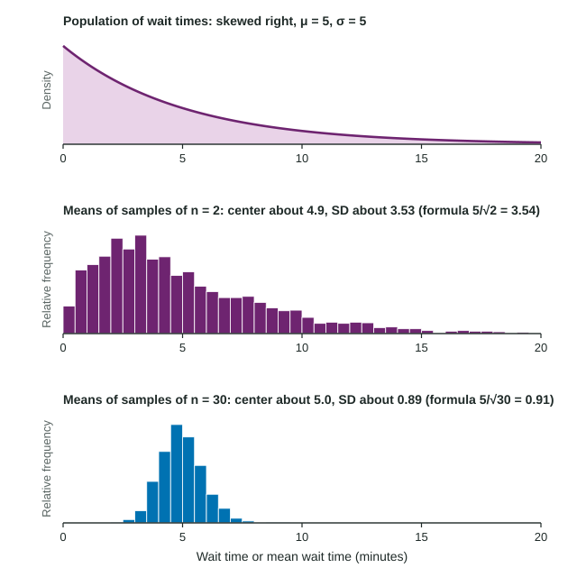

Take a random sample, compute a statistic, and you get one number. Take another random sample from the same population and you will get a slightly different number. This topic is about that variation: how much a statistic changes from sample to sample, and what pattern the changes follow. It is the idea that makes inference in Units 3 and 4 possible.
Statistics vary: sampling variability
In a large city, 40% of voters support a park tax. That 0.40 is a parameter: one fixed number describing every voter. Poll a random sample of 100 voters and the sample proportion might be 0.37. Another sample might give 0.44. A statistic varies from sample to sample because each sample holds different individuals. This is sampling variability, and it is not a mistake: it happens even with perfect random sampling.
The sampling distribution of a statistic is the distribution of its values in all possible random samples of the same size from the same population. We rarely see it directly, but a simulation can approximate it: a computer took 500 random samples of 100 voters and the 500 values of pile up around 0.40, mostly between about 0.30 and 0.50, in a roughly symmetric mound.
Three distributions, kept apart
| Distribution | Made of | Example |
|---|---|---|
| Population | every individual's value | the wait times of all customers at a pharmacy |
| One sample | the values in one sample | the waits of the 40 customers you timed |
| Sampling distribution | the statistic from every possible sample | the mean wait of every possible sample of 40 |
Most confusion in this topic comes from mixing these up. The sample looks like the population (skewed if the population is skewed). The sampling distribution is a different object: a distribution of means or proportions.
Center and spread of the sampling distribution of

Pharmacy wait times are strongly skewed right with mean minutes and standard deviation minutes. The figure shows simulated sample means for two sample sizes. Two patterns hold for any sample size n:
- Center: . Sample means are centered at the population mean; they do not systematically run high or low.
- Spread: . Averaging more individuals cancels out more of the extreme values, so the means vary less.
For samples of 40 waits,
Shape: the Central Limit Theorem
If the population is normal, the sampling distribution of is normal for any sample size. If the population is not normal, something remarkable happens anyway. The Central Limit Theorem says that when n is large, the sampling distribution of is approximately normal, whatever the shape of the population. In the figure, means of 2 waits are still skewed right, but means of 30 waits form a near bell shape. A common guide is that n of 30 or more is large enough; strongly skewed populations need larger samples than mildly skewed ones.
The theorem is about the sample mean, not the data. A sample of 1,000 waits is still skewed right. It is the means of many samples that pile up in a normal shape.
Using the sampling distribution
Worked example. Waits have and minutes, skewed right. For a random sample of 40 customers, find the probability that the sample mean wait is more than 6 minutes.
Shape: n = 40 is large, so by the Central Limit Theorem is approximately normal.
Center and spread: and
Area: , so
About 10% of random samples of 40 customers have a mean wait above 6 minutes.
The same calculation can test a claim. If a random sample of 40 had a mean wait of 7.5 minutes, then
The common slip is using in place of . Single waits of 6 minutes or more are common; sample means of 40 waits that high are not, because means vary much less than individuals.